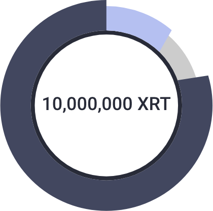
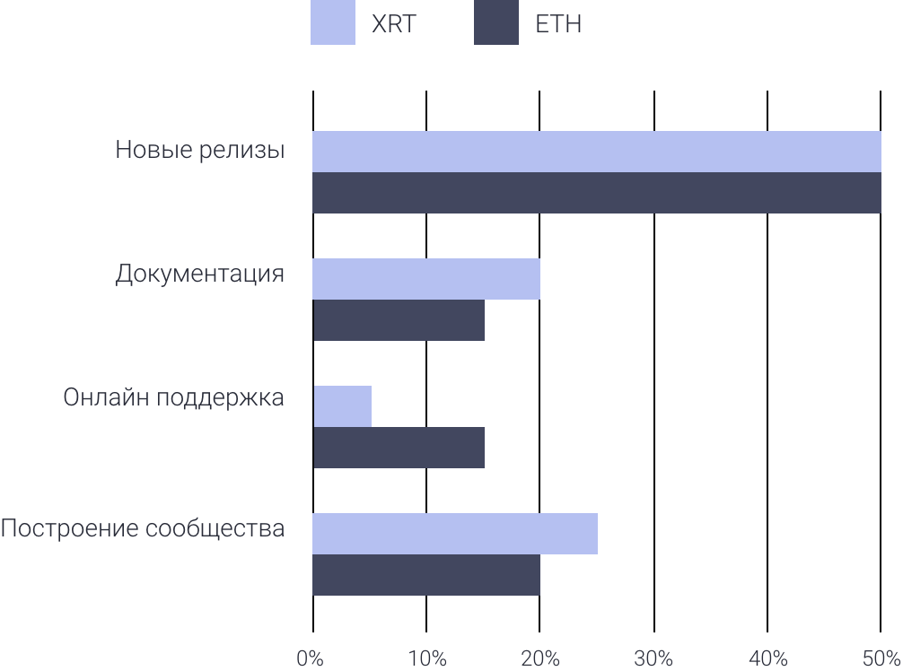
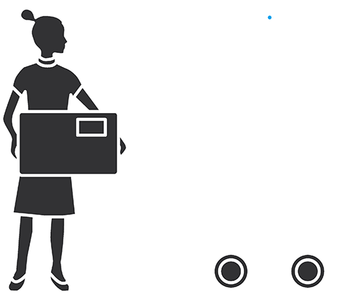
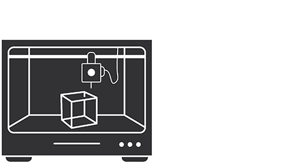
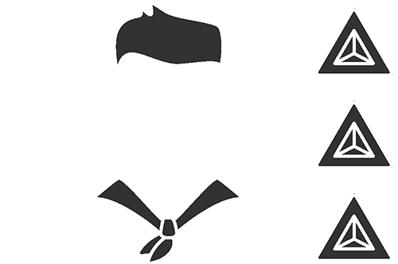

Robonomics token generation event
Статус аукциона: скоро начало
Ожидаем мнение Financial Market Authority (FMA)
Последнее обновление 10 декабря 2018
Token in a nutshell
Erc20
Utility
Инженеры Индустрии 4.0 и умных городов
Никто из robonomics.network и (или) команды AIRA (Airalab) не будет присылать вам личные сообщения, содержащие какие-либо адреса для участия в ТГЕ или предложения каких-либо бонусов. Пожалуйста, остерегайтесь мошенников, которые присылают вам поддельные ETH адреса в личных сообщениях.
Детали
После альфа лето 2018 и бета осень 2018 релизов Робономики в Ethereum mainnet, корневая команда разработчиков предлагает сообществу принять участие в оценке начальной стоимости XRT.
- 77% начальной эмиссии XRT доступно для голландского аукциона.
- Цена XRT начинается с максимальной и снижается со временем.
- Каждый участник аукциона получит XRT по минимальной / финальной цене.

77% – Предложено для голландского аукциона
13% – Гранты для сообщества и разработчиков
10% – Распределено ранее
Оценка будет проходить в форме Голландского аукциона. Максимальная сумма сбора ограничена 10,000 ETH. Бонусов нет. Финальная цена аукциона определит начальный множитель последующей эмиссии XRT. Сразу после аукциона XRT могут быть использованы для начала работы провайдером сети Робономика. Пользователи сети также смогут использовать XRT для оплаты транзакций по запуску роботов с помощью Ethereum компьютера. Подробнее White paper: глава 6 “Robonomics Token, XRT”
На что планируем тратить
Полученные от сообщества ETH и XRT, выделяемые на гранты, будут расходоваться корневой командой разработчиков Airalab с целью выпуска новых релизов программного обеспечения на GitHub; улучшения технической и пользовательской документации; обеспечения бесплатной онлайн поддержки пользователей в течении последующих 2 лет.
| Статья расходов | XRT | ETH |
|---|---|---|
| Новые релизы | 50% | 50% |
| Документация | 20% | 15% |
| Онлайн поддержка | 5% | 15% |
| Построение сообщества | 25% | 20% |

Что такое Робономика
Это первая opensource платформа, к которой можно подключить своего робота, как сервис для конечных пользователей (robot-as-a-service). Поддерживаемые нами технологии третьего поколения Интернет реализуют обмен технико-экономической информацией между машинами и людьми. А с помощью токена XRT будут созданы экономические стимулы поддержания Робономики децентрализованной сетью провайдеров.
Что дает Робономика

Конечным пользователям позволяет не приобретая дорогостоящее оборудование получить услугу автономного робота.

Робототехники могут предоставить прямой доступ пользователей к функциям робота на основании подписки или оплаты конкретной услуги.

Провайдеры Робономики могут открывать рынки IoT данных, контролировать беспилотный трафик и даже управлять запуском целых заводов получая с каждой новой транзакции оплату от сети.
Корневые разработчики Airalab
Александр Крупенькин
Разработчик в области робототехники и IoT, разработчик умных контрактов Ethereum, архитектор технического стека AIRA